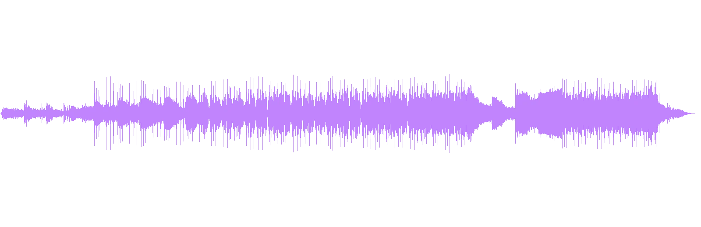
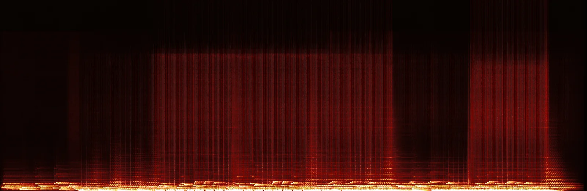
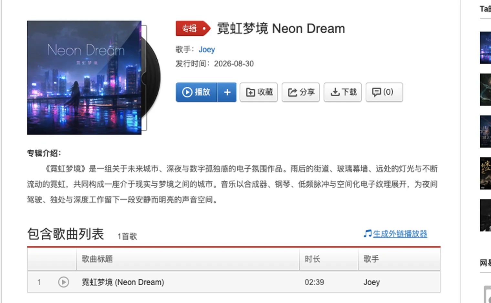

On the evening of August 30, a file named NEON DREAM.wav appeared in my Downloads folder. It was 48kHz stereo and 159.84 seconds long. NetEase Cloud Music rounded the public track length to 2 minutes 39 seconds.
The number is short, but the work had more in it than typing a prompt and waiting. I began with a deliberately narrow world. A future city after dark. Digital loneliness. Wet streets, glass towers, distant lights, and neon that never quite stops moving. I wrote no plot and no lyrics. The place had to exist through sound.
AI makes sound arrive quickly. The creator still has to narrow the world until each surviving version feels like a decision.
Deciding how close the city should feel
I kept the sound palette small. Synths open the space. Piano gives the listener something human and graspable. Low pulses keep the scene moving. The remaining electronic textures sit around the edges, as if the city is still operating while one person has stopped.
The album description names three listening situations: night driving, solitude, and deep work. Each places a different demand on the music. Driving needs direction. Solitude needs room. Work asks the track not to keep grabbing attention. I kept the steady pulse and a brightness that could sit in the background without disappearing.

The waveform only shows energy over time. It cannot replace listening. It does confirm that the track did not fill every second with a new event. The energy stays controlled, breathes once, then returns.
Making the low pulse visible
I spend most of my working life designing products, so I am used to putting an abstract judgment on a screen. A spectrogram does something similar for music. Time runs left to right, while energy at different frequencies rises vertically.

The line along the bottom matters most to me. It gives the city a ground plane. Piano notes and electronic textures can briefly float above it, but the low end ties all 159.84 seconds together. That is a practical reference I can carry into the next track.
The cover sends three signals and then steps back
After the audio export, I made a square cover. The selected image is 1,254 pixels on each side. A city fills most of the frame. A lone person faces away from the viewer and stands on wet ground under a thin title.
The artwork is AI-generated, so I label it as a concept image. Its job is modest. At thumbnail size, a listener should receive rain, neon, and solitude before pressing play. Once the track begins, the cover can get out of the way.
Publishing forced the provenance into the open
I submitted the track as an original AI work and kept Suno in the source information. It is instrumental, so the lyric field says there are no lyrics. Audio and artwork were selected in separate upload steps because the platform accepts different file types.
I prefer the tool to be visible. Listeners can dislike AI music or judge it after hearing it. Hiding the source would make every decision around the release harder to trust. The tool participated in generation. I owned the direction, selection, title, artwork, metadata, and public release.

After release, I opened it again in NetEase. The player reached 2:17 with only a little time left. I was checking something simple. Once the WAV left my laptop, did the cover, title, description, and sound still belong together? They did, so I left the page there.
What changed on my own site
My portfolio's music corner had been frozen around three covers recorded in 2021. I kept those tracks, moved Neon Dream to the top, added the other 2026 originals, and changed the external link from one old album to the complete artist page. The list grew from three tracks to seven.
It is a small interface update and a useful record. The page now holds my recorded voice and music whose direction I set, generated with AI, selected, finished, and signed with my name.
Four checks for my next AI instrumental
- Write one scene that can be heard, with a place, time, or human action grounded in it.
- Choose two lead sounds and one element that carries the floor or pulse.
- Ask whether the cover still sends one clear signal when reduced to a phone-sized thumbnail.
- Keep the AI source, work type, and lyric status explicit, then replay the public version from start to finish.
- Neon Dream on NetEase Cloud Music for the title, artist, date, duration, and album description.
- The final local file NEON DREAM.wav, 159.84 seconds at 48kHz stereo, generated the waveform and spectrogram above.
- The cover is an AI-generated concept image. The release screenshot comes from the public NetEase page on August 30, 2026.